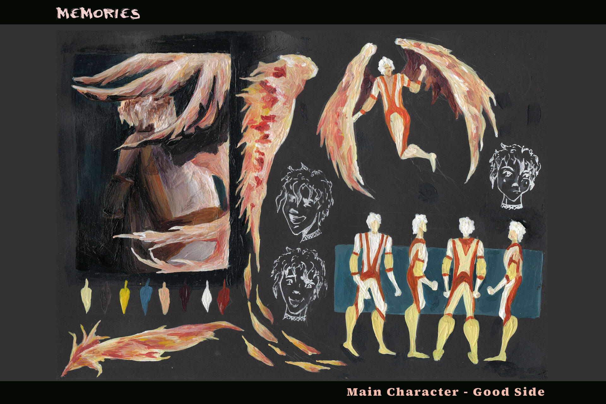
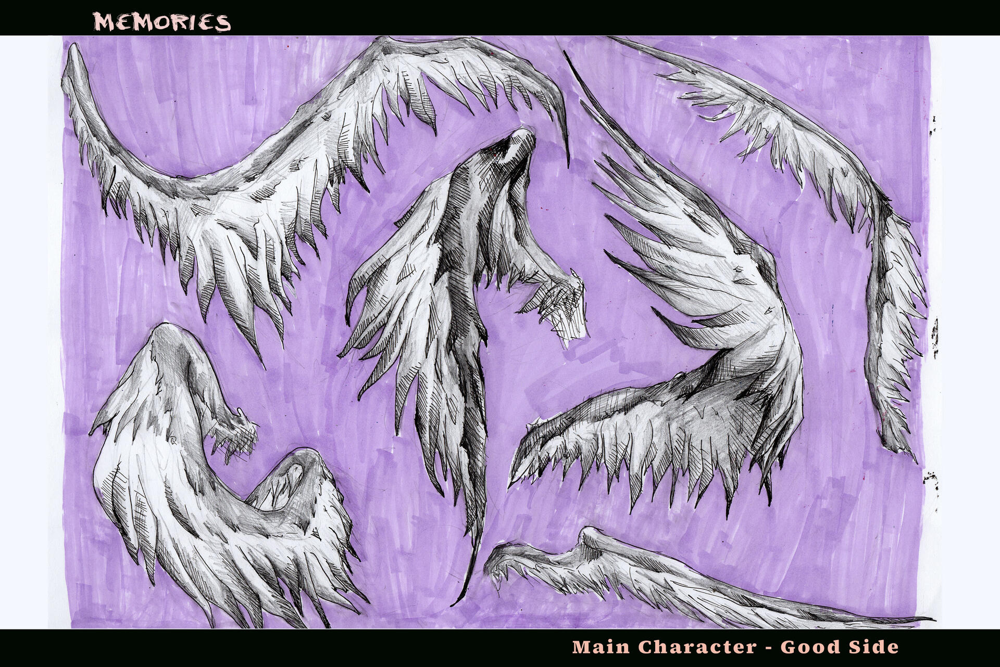

Memories is a concept proposal project for an animated movie. The project is about the acceptance of loss, of the big changes and obstacles we encounter in our journey, and of our limiting feelings. The story is centered around the main character, Alec, who is moving out of his childhood house. Inside his brain, two personas are fighting over what he should feel, which memories he should keep, and which he should let go of to make space for new ones.
Main Character - Light side exploration
This is a study of the positive side of the main character, the side containing his adaptability, growth mentality and his free spirit. This is the part of him that takes risks, that loves change, that is lively and loves learning from life’s lessons. His wings reflect the freedom he has because of his light approach to life and his yellow and orange costume shows his energetic and optimistic personality.


Main Character - Dark side exploration
His other side represents what we usually call the “dark side”: the part of us in need of hiding from the world and sometimes from ourselves, commonly known in astrology as our moon sign. This version of the character carries a thick fog around him, portraying how the negative part of us, the fear, the hate, the pain, isolates us from reality. Powerful somber feelings block our overall vision, making us see only through cracks. When we are overwhelmed by emotions, our surviving mechanisms narrow our sight, forcing us to see everything in shades of black with rare breaks of light. The light shown is usually the safe approach and not necessarily the one which will bring us the most joy, but it is the only one we are able to see.
Sketches + Brainstorming
3D
The sculpture represents a fighting shot of the two versions of the main character. The clay is a mix of multiple colors, showing the world not only in black and white, but also in variations and imperfections. Even if the dark character apparently hit the yellow one, the balance of good and bad in life is pushing the positive character’s leg to hit back. The shot is one of equilibrium, almost like the calm before the storm. The ground is made from the dark character’s clay, meaning they are playing on the darkness’ terms, which we almost always are.
Storyboard
The first scene of the project takes place in the main character's room. It is his final day in his old house and everything around him is packed in boxes except for some objects that he cannot get himself to take away. The camera zooms on his face as he is sitting in a corner in his room, overwhelmed by his emotions. He broke his mirror days ago, but cleaning would’ve made the move more real, so he left everything into place, as if time could freeze. Zooming closer, through the shard he’s holding in his hand, we see a close-up of his eye, a first glance at his two personas, fighting behind his tears. We are transported through his thoughts, from his room to a first memory he struggles to leave behind.”I’m never going to see my grandparent's circus performance again.” We enter in a carnival setting as the positive side is thrown against Alec’s favorite attraction: The Grand Wheel. Here, Alec’s positive version finds the box in which he packed all of his most important objects.
Alec’s Room - three days before the move
Alec’s room shows his passion for geography and astronomy. His room hasn’t been decorated since he was seven, when he had an obsession with fantastical creepy creatures, more specifically phantoms. The remaining objects are the ones which hold the most meaningful of his experiences. In the top left corner, the three rough sketches of the room portrayed in different times of the day show how the room remains the same and the struggle of accepting the move persists.
Carnival Design
As the viewer enters the mind of the main character, the first memory they see is one from the carnival. As our memories tend to merge together or change in time, his carnaval attraction rides and circus visits are portrayed as a single flashback.
Characters Line-Up
The majority of Alec's extended family is either part of the circus or part of the series of events surrounding the city he used to live in, so the energy of carnivals and circuses feels like home to him. Even if he meets the aerial dancers, jugglers, mimes and ringmasters every year now, as he is recalling his experiences, he can’t distinguish their faces. “If I can’t remember their faces now, how much time will it take me to forget them completely?”